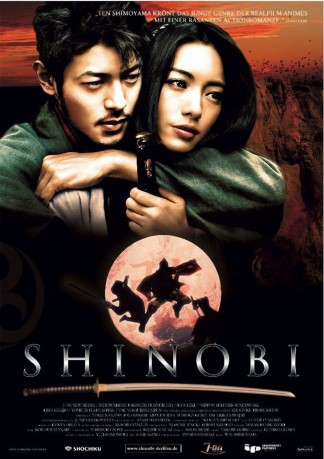

#1429 Shinobi - Kampf auf Liebe und Tod
Alternativ: Shinobi: Heart Under Blade (Englischer Titel)
 
 IMDB-Wertung: 7.0 / 10
IMDB-Wertung: 7.0 / 10  Metascore: 0
Metascore: 0 
Japan im Jahre 1614: Der große Herrscher Tokugawa einigt das lange zerrissene Land und die Zeit der Clankriege zwischen den Landesfürsten scheint besiegelt. Ninja-Meister Hattori Hanzo und seine Shinobi-Krieger erscheinen nutzlos für die weiteren Entwicklungen im Land was zu einem verhängnisvollen Plan führt: Die beiden größten Clans des Landes sollen in einem Duell ihre jeweils 5 besten Kämpfer gegeneinander antreten lassen. Der Clan, dessen Krieger diesen Kampf gewinnen werden, stellt die Nachfolhe Tokugawas sicher. 10 Krieger mit übermenschlichen Eigenschaften treten nun an, die Herausforderung anzunehmen. Darunter auch die junge Oboro sowie der Clanthronfolger Gennosuke. Beide sollen gegenseitig um ihr Leben und die Zukunft ihres Clans kämpfen. Doch niemand ahnt, dass die beiden mehr vereint als voneinander trennt…
Jahr: 2005
Dauer: 107 Minuten
FSK: 16
Land: Japan Studio: I-On New MediaTonspuren:
Untertitel: Deutsch,
Auflösung: 1080p (1920x816) Größe: 5754 MB
Genre: Action, Drama, Fantasy, Liebe
Regisseur: Ten Shimoyama
Drehbuch: Kenya Hirata, Fûtarô Yamada
Soundtrack: Tarô Iwashiro
Darsteller:
 Tak Sakaguchi als Yashamaru
Tak Sakaguchi als Yashamaru- Mitsuki Koga als Chikuma Koshirou
 Troy Baker als Kouga Gennosuke, Kouga
Troy Baker als Kouga Gennosuke, Kouga Laura Bailey als Oboro, Iga
Laura Bailey als Oboro, Iga Colleen Clinkenbeard als Hotarubi
Colleen Clinkenbeard als Hotarubi Juli Erickson als Ogen, Head of Iga-clan
Juli Erickson als Ogen, Head of Iga-clan Grant James als Kouga Danjou
Grant James als Kouga Danjou Mark Stoddard als Yakushiji Tenzen
Mark Stoddard als Yakushiji Tenzen- Yukie Nakama als Oboro
- Joe Odagiri als Kouga Gennosuke
- Tomoka Kurotani als Kagerou
- Erika Sawajiri als Hotarubi
- Takeshi Masu als Muroga Hyouma
- Shun Itô als Mino Nenki
- Hôka Kinoshita als Kisaragi Saemon
- Kenji Miyoshi als Kisarigi Saemon
- Lily als Ogen
- Minoru Terada als Kouga Danjou
- Masaki Nishina als Yagyu Jyubei Mitsuyoshi
- Osami Nabe als Man pulling a wagon
- Toshiya Nagasawa als Yagyu Munenori
 Yutaka Matsushige als Hattori Hanzou Masanari
Yutaka Matsushige als Hattori Hanzou Masanari Renji Ishibashi als Nankobou Tenkai
Renji Ishibashi als Nankobou Tenkai- Kazuo Kitamura als Tokugawa Ieyasu
 Kippei Shîna als Yakushiji Tenzen
Kippei Shîna als Yakushiji Tenzen- Ed Blaylock als Yagyu Tajima-no-kami Munenori
 John Burgmeier als Chikuma Koshirou
John Burgmeier als Chikuma Koshirou Justin Cook als Yashamaru, Iga
Justin Cook als Yashamaru, Iga- Greg Dulcie als Hattori Hanzou
 R. Bruce Elliott als Tokugawa Ieyasu
R. Bruce Elliott als Tokugawa Ieyasu- Manami Kôjô als Ninja
 Jason Liebrecht als Kisaragi Saemon
Jason Liebrecht als Kisaragi Saemon Mike McFarland als Mino Nenki, Iga
Mike McFarland als Mino Nenki, Iga- Takashi Miyazaki als
- Andy Mullins als Nankobou Tenkai
- Ui Saeki als Ninja
 Kent Williams als Muroga Hyouma
Kent Williams als Muroga Hyouma- Hiroko Yashiki als
 Stephanie Young als Kagerou
Stephanie Young als Kagerou
Datei: X:\HD-Eastern-Classic(N-Z)\Shinobi - Kampf auf Liebe und Tod (2005, FSK16, 1920x816).mkv seit 03.07.2015
Festplatte: HD Eastern+Western
 Es gibt insgesamt 61 Filme in der Gruppe 'HD-Eastern-Classic(N-Z)'
Es gibt insgesamt 61 Filme in der Gruppe 'HD-Eastern-Classic(N-Z)'